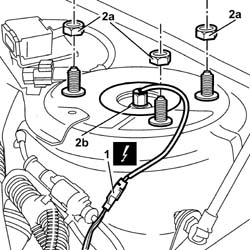
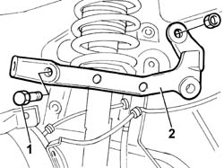
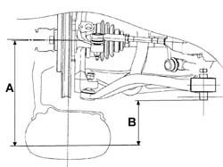

4410B82 Upper track control arm support
- Path
- Procedures > 44 SUSPENSION AND WHEELS > 4410 FRONT SUSPENSION > 4410B FRONT SUSPENSION TRACK CONTROL ARMS > 4410B82 Upper track control arm support
- Kind
- repair procedure (removal / refitting; the operation number is the code)
- Applies to
- all engines; all production periods
- Interactive page
- https://sloeber94.github.io/elrnDB-lThss/en/#/177630
Applies to: all engines; all production periods
 Removing
Removing
 Refitting
Refitting- Position the vehicle on a lift.
- Disconnect the negative battery terminal.
See in Op. 7040D50 ENGINE COMPARTMENT UPPER SOUND INSULATION SHIELD - R.R.
See in Op. 4450B04 Right FRONT WHEEL (one) - R.R.
See in Op. 7055B42 FRONT WHEEL ARCH LINER (one), left or right - R.R.
See in Op. 7055B64 Engine compartment DUST SEAL in front wheel arch (one), left or right - R.R.
See in Op. 4410B73 Front and rear upper track control ARMS - R.R.
1. Disconnect the electrical connection for the left or right front vertical acceleration sensor.
 | Description | Connector |
|---|---|---|
1 | Left front vertical acceleration sensor | K006 |
| Description | Connector |
|---|---|---|
1 | Right front vertical acceleration sensor | K007 |
2. Undo the fixing nuts (2a) releasing the front suspension spring/shock absorber assembly (2b) from the fastening on the turret.

Applies to: all engines; all production periods
1. Undo the bolts and the nut fixing the upper track control arm support.
- Move the spring/shock absorber assembly to the side.
2. Remove the upper track control arm support.

Applies to: all engines; all production periods
Refitting
Removing- Position the track control arm support and secure it using the fixing bolts.
- Position the spring/shock absorber assembly and fasten it using the fixing nuts.
Value - daNm | Fastening | Component | Ø | |
|---|---|---|---|---|
. | (turret) 4 | Nut | - | M10 x1,25 |
- Connect the electrical connection for the left or right front vertical acceleration sensor.
| Description | Connector |
|---|---|---|
. | Left front vertical acceleration sensor | K006 |
| Description | Connector |
|---|---|---|
. | Right front vertical acceleration sensor | K007 |
See in Op. 4410B73 Front and rear upper track control ARMS - R.R.
See in Op. 4450B04 Right FRONT WHEEL (one) - R.R.
- Place the vehicle in Standard "A" conditions, in other words with the vehicle mass complete, spare wheel, tool kit, all supplies and accessories (oil, engine coolant, etc.) and a full fuel tank.
- Check that the tyre inflation pressure is correct.
- Position the vehicle on a support so that the wheels are resting on the ground.
Applies to: engines: 2.4 20V; all production periods
- Check that after having place the vehicle in standard "A" conditions, the measurement "A"-"B" corresponds to the figure given in the table below.
 | Subject | Value |
|---|---|---|
. | Front wheel geometry | mm |
- | A - B | 165 ± 5 |
- | Standard A | - |

Applies to: engines: 2.4 JTD 10V; all production periods
- Check that after having place the vehicle in standard "A" conditions, the measurement "A"-"B" corresponds to the figure given in the table below.
| Subject | Value |
|---|---|---|
. | Front wheel geometry | mm |
- | A - B | 165 ± 5 |
- | Standard A | - |
Applies to: engines: 3.0 V6, 3.2 V6; all production periods
- Check that after having place the vehicle in standard "A" conditions, the measurement "A"-"B" corresponds to the figure given in the table below.
| Subject | Value |
|---|---|---|
. | Front wheel geometry | mm |
- | A - B | 162 ± 5 |
- | Standard A | - |
Applies to: engines: 2.0 TB; all production periods
- Check that after having place the vehicle in standard "A" conditions, the measurement "A"-"B" corresponds to the figure given in the table below.
| Subject | Value |
|---|---|---|
. | Front wheel geometry | mm |
- | A - B | 163±5 |
Applies to: engines: 2.4 JTD 20V; all production periods
- Check that after having place the vehicle in standard "A" conditions, the measurement "A"-"B" corresponds to the figure given in the table below.
| Subject | Value |
|---|---|---|
. | Front wheel geometry | mm |
- | A - B | 162 ± 5 |
- | Standard A | - |
Applies to: all engines; all production periods
See in Op. 7055B64 Engine compartment DUST SEAL in front wheel arch (one), left or right - R.R.
See in Op. 7055B42 FRONT WHEEL ARCH LINER (one), left or right - R.R.
- Connect the negative battery terminal.
- Remove the vehicle from the lift.
See in Op. 7040D50 ENGINE COMPARTMENT UPPER SOUND INSULATION SHIELD - R.R.
Topics linked from this page (6)
- 4410B73 Front and rear upper track control ARMS - R.R.
- 4450A10 FRONT WHEEL GEOMETRY - Check using optical equipment - Includes front wheel toe-in adjustment if necessary
- 4450B04 Right FRONT WHEEL (one) - R.R.
- 7040D50 ENGINE COMPARTMENT UPPER SOUND INSULATION SHIELD - R.R.
- 7055B42 FRONT WHEEL ARCH LINER (one), left or right - R.R.
- 7055B64 Engine compartment DUST SEAL in front wheel arch (one), left or right - R.R.